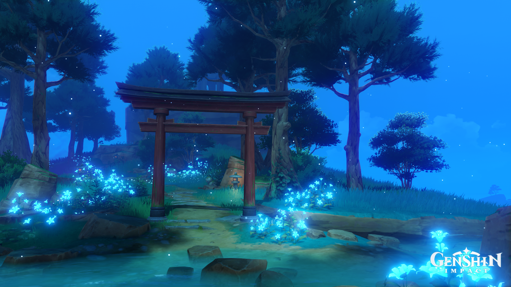
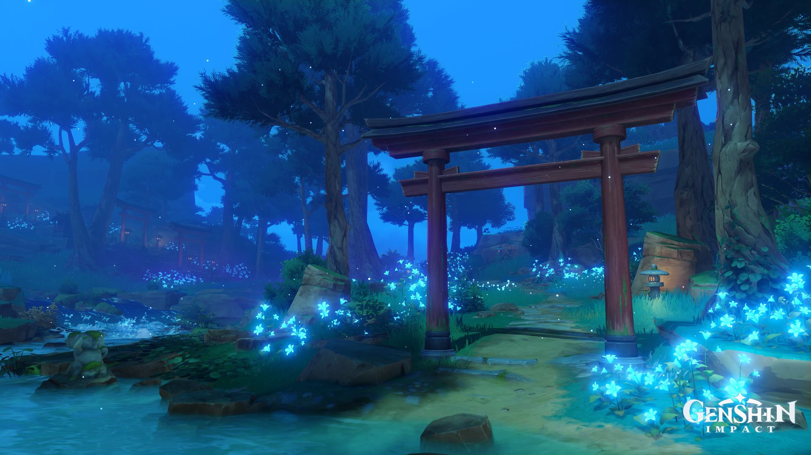
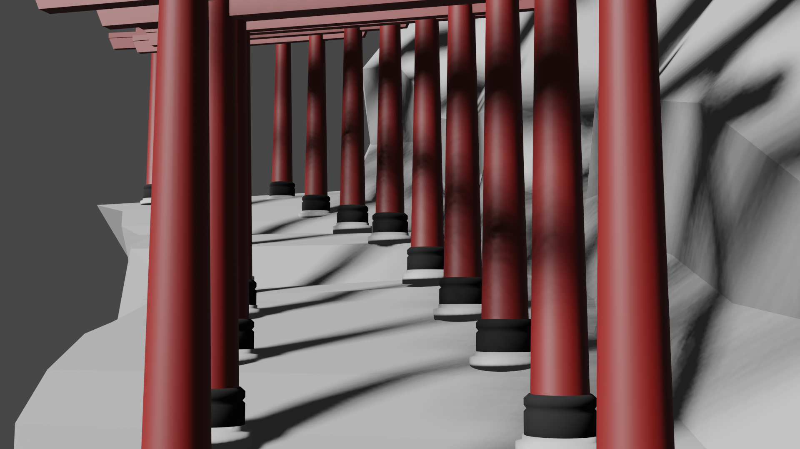
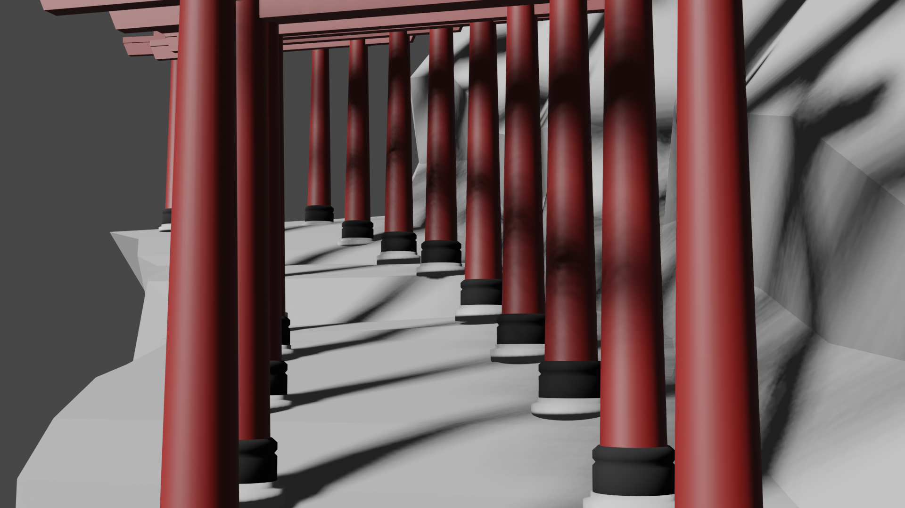
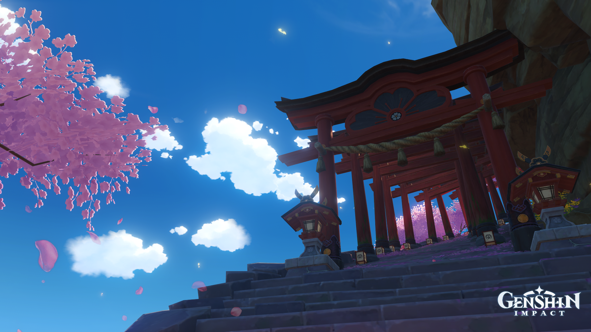
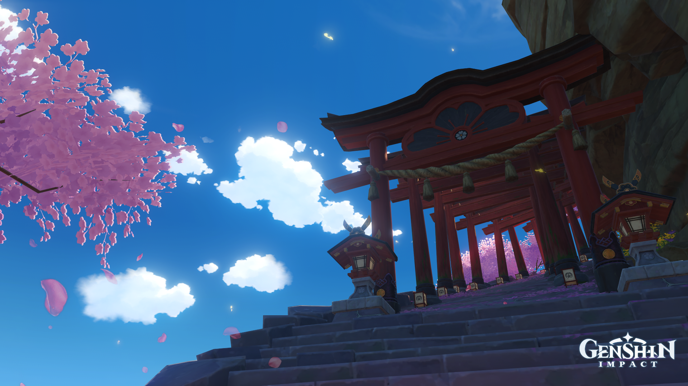

Tori Gate
My project, I decided to create a tori gate scene like the Fushimi Inari Taisha in Kyoto, Japan. How I began my modeling was by deciding what's the best tori gate I can use and what I should include in my scene.
I've had the opportunity to have some 3D Modeling and Animation experience under my belt since I've previously created some short animated films. However, majority of my experience was all done in Maya. Once I lost access to Maya, I realized that I had to find another application which was Blender, since it is open-source. I started a couple years back creating items in blender however, since it was slightly different from Maya, it was a hard transition over. There were a lot of features that I was expecting to utilize which were not readily available for me. I was able to create mockups in Blender which were not to the best of my abilities due to not knowing how to fully shade the best nor render in Blender. I also was not proficient in animating in Blender.
With this class, I'm certain that I would be able to grow my skills in shading but as for now, my focus is learning how to better my 3D modeling skills. I first began by starting up my game that I play called Genshin Impact. In Genshin Impact, they have beautifully rendered atmospheres that look like you're stepping into the scene in real life.
I would circle around the object multiple times, searching for all the right angles on how to accurately model the object. I would add extra meshes when necessary and compiled it all together. After circuling the object many times and finally modeling the tori gate, it was time to begin the scene.

When I finished my first Tori Gate, my first instinct was to then import that model into a new scene.
In Maya, it's common to have a parent file with all your assets and you don't edit the assets in that file but rather the other individual files. So far, I was not successful and could not find that method. I was searching to find a way since I wanted to create a scene, but in the end it was not fruitful. I decided to put that behind me and first began by duplicating and placing all the items together on the scene. I have 25 tori gates total in my scene altogether as well as over 200 rocks in the scene. Each one helped pull together the Fushimi Inari Scene. 

However, I ran into another problem.
I was struggling on rendering the scene. Each time, I would attempt to render the scene, the scene would only render half way. There were over 20 Tori Gates missing in the scene which was not what I wanted. Luckily during class, we later found out that the reason that it was not rendering was due to the render limit which was 100m while my scene was way over that. Thanks to expanding the rendering agent to over 1000m, I now have enough space to render my scene.
In the end, I finally completed the scene!
I wanted to add more shading to the scene to provide a deeper feel to the scene, but since I'm not as experienced yet with the shading attributes, it can only go so far. I will be addding more to the scene over time to continue growing in my Blender skills so that I can turn the scene from a nicely modeled Tori Gate - Fushimi Inari into a a realistic Fushimi Inari. My goal is to turn this rough render into a beautiful scene like the one from Genshin below, which also provided a lot of helpful scene references. With that, I'm glad that I had a lot of experience with Maya and 3D Modeling and I'm excited to continue utilizing it in the future for more prototyping and creating impactful scenes and products. 
